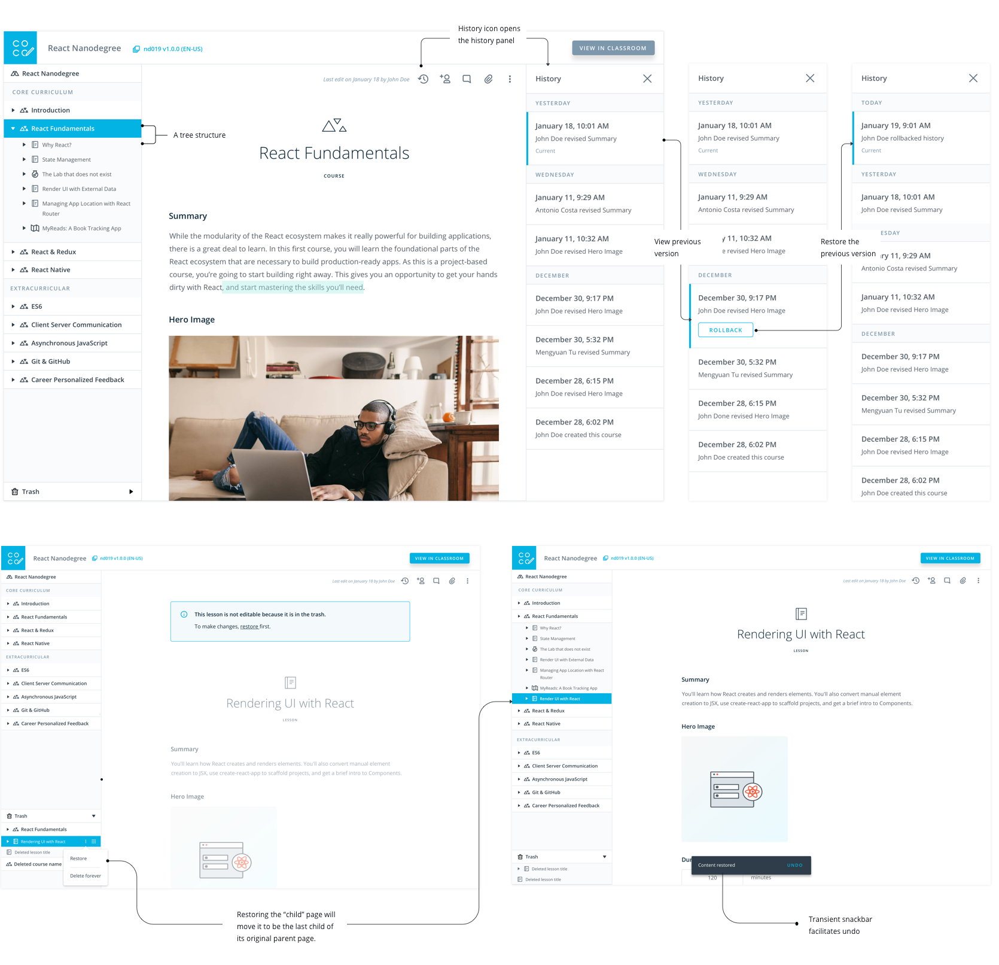

Udacity CREATE
Design a suite of tools and processes to scale Udacity’s online learning platform.
Duration: September 2017 - present | Role: Lead Product designer
Duration: September 2017 - present | Role: Lead Product designer
01. Background
Since September 2017, I have been collaborating with remote Creative Director Antonio Costa to lead the company’s most ambitious project to scale Udacity’s online learning platform.
As context, Udacity’s paid Nanodegree programs have been wildly popular - growing from 15K to 50K purchasing students in less than a year - and the old process for launching new nanodegree programs (hire full time content developers) couldn’t keep up with demand.
How does Udacity best scale its entire content production process and open its platform to external creators? That’s a huge question. One principle we hold is that " We are the platform's first customers.
Udacity can never turn itself into a platform unless it is itself built from the ground up using the same APIs that it would offer to external creators. " So we started by identifying problems internally first and broke down the big question into 3 main questions:
- 1. What is the current process for launching a nanodegree program?
- 2. What are the pain points in that process?
- 3. What pain points should we prioritize solving?
02. User Research
We didn't have user researchers, so I initiated the whole user research by interviewing 4 internal content developers, 2 nanodegree product leads, 3 program managers about program goals, processes, collaboration models, and challenges. I summarized their thoughts into 14 main themes, a stakeholder map, and a map of the program development journey.
Based on the research, the whole picture of launching a program became more crystal clear to me. Basically there are 3 main stakeholders in the full journey of lauching a nanodegree program and their roles are as follows:
- Content Creators: create content
- Product Leads: define the product strategies and prices
- Program Managers: manage detailed tasks and cohorts (a group of students start and end a program at the same time)


03. The major pain points
Based on the user research, we identified the major pain points for different stakeholders
04. Design directions

05. Design explorations
I then tested these concepts with our internal content creator users. They were very excited about having a single tool for creating, editing, and commenting on content. We followed that feedback to flesh out the design details for this solution that combines the classroom section of the platform (which is student-facing) with the content composer tools section (which is creator-facing) into one unified environment. We believed this would greatly reduce the friction that content creators experience when they consume, preview, and create content.


06. Which design exploration should we invest?
07. Case Study:Content Composer App
As we focus less on the content composer app, the major goal is to make the existing one more user friendly and incidents-free. Here are some of the problems and solutions I identified and implemented.
- The app had a very messy navigation structure. I abstracted the app’s structure based on the different levels of controls it managed (global/program/contextual) and regrouped them, later verifying the new navigation by testing them with new users who were able to easily navigate the site and complete tasks.
Example 1

- Content creators want to undo unexpected edits, but all the programs at Udacity is in a tree structure. If we simply follow the google doc history patten, then when a user accidently deletes a lesson from a course, and recovers by just rolling back the history of the whole course, then all the nested lessons that has been edited will lose their changes. So the problem was: how can a user recover a deleted page without affecting sibling content? I reviewed lots of other creation tools to help me create this solution: Isolate the edit history page to only show the actions for that one page. That way, when a user reverts a change, his/her action only changes the version of that page. Similarly, the user can select “trash” to restore a page without affecting sibling pages. The page would be restored to its original state, under its original parent page. 
Example 2
08. Case Study:Cohort Manager App
This is a brand new app I designed to improve program managers' work efficiency and reduce incidents caused by schedules.
- 1. PMs can easily create terms and cohorts without manually copying information from Content Composer App
- 2. PMs can edit the whole cohort schedules (including project deadlines) in the app without dependencies from Content Composer App
- 3. PMs can easily find and manage related cohorts.
- 4. PMs and Other Users can add/remove students from cohorts
Main tasks
- After conducting user testing, I revised the landing page from a complicated structure to a simplified version by emphasizing the “search” functionality to reduce information overload. I was able to do this by identifying primary/secondary data for a cohort.
Iteration 1 - Cohort Landing Page

- I explored different ways of displaying the relationship between cohort durations and important due dates. I decided displaying a visual duration graph would be best after collecting feedbacks from PMs. It was the simplest, most elegant solution.
Iteration 2 - Cohort Scheduling Page

- In order to ship tools as quickly as possible and reduce front-end cost, we tried to create and use more shareable UI components across all app pages and internal tools
Reusable UI components
snapshot of my UX spec

09.Reflection
I learned a ton with this project - the first where I’ve designed a whole company's workflow.
Big companies like Microsoft have more engineering resources, time, and budget to plan and test a product.
But in a startup, you have have to do more with less.
I learned to define and prioritize problems and do the right thing with the right scope at the right time.
I also learned how to put new applications properly to work to create a cascading workflow for a company’s operations.
And while speed is critical, A system won’t scale well if you don’t design a sustainable and robust infrastructure services.
One good practice is to structure the company internally to match the service-oriented design of its platform,
in a way that the services will reperesent both software and organizational structures. It allows the software to innovate quickly and stay aligned with the operational needs.